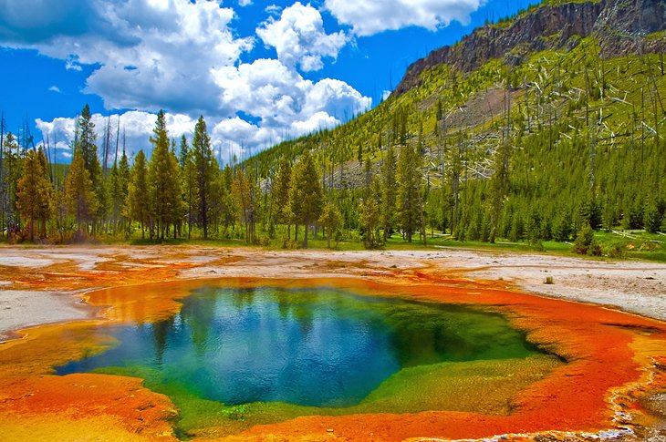

National Parks FAQ
- How many people visit the national parks?
- Total recreation visitors to the national parks in 2018: 318,211,833.
- How old is the National Park System?
- The National Park Service was created by an act signed by President Woodrow Wilson on August 25, 1916.
- How many employees are in the National Park Service?
- Permanent, temporary, and seasonal employees: More than 20,000
- What is the origin of the National Park Service arrowhead?
- The arrowhead was authorized as the official National Park Service emblem by the Secretary of the Interior on July 20, 1951.
- How many areas are in the National Park System?
- The system includes 419 areas covering more than 85 million acres in every state, the District of Columbia, American Samoa, Guam, Puerto Rico, and the Virgin Islands.
- What is the largest national park site?
- Wrangell-St. Elias National Park and Preserve, AK, at 13.2 million acres.
- What is the National Park Service budget?
- Fiscal Year (FY) 2014 Enacted: $2.98 billion.
- Can I bring my pet to a national park?
- Some national parks welcome pets—in developed areas, on many trails and campgrounds, and in some lodging facilities.
- How do I apply for a job with the National Park Service?
- National Park Service jobs, including both permanent and seasonal positions, are listed on USAJOBs.
- What do I need to know about driving off road in national parks?
- Before you head out, check with the national parks that you intend to visit. In many national parks, off-road driving is illegal. Where off-road driving is allowed, the National Park Service regulates it.
